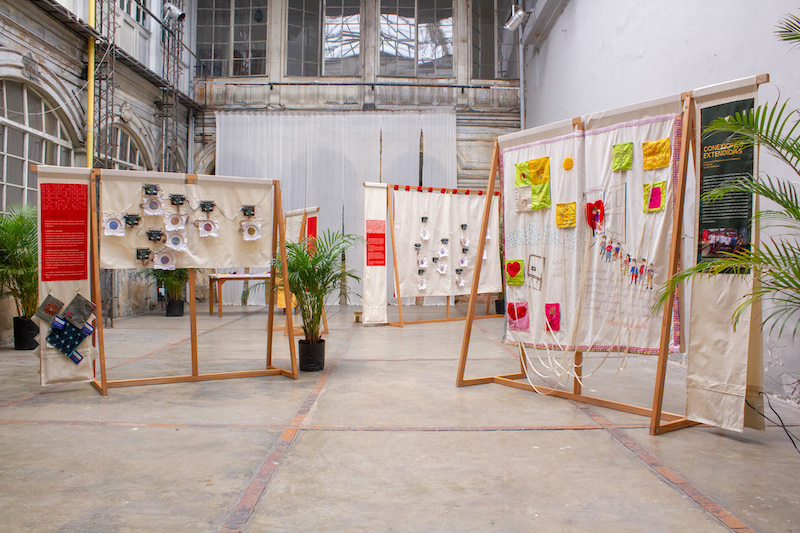
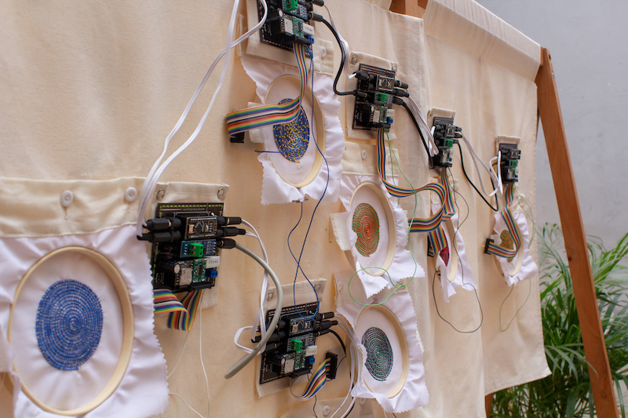
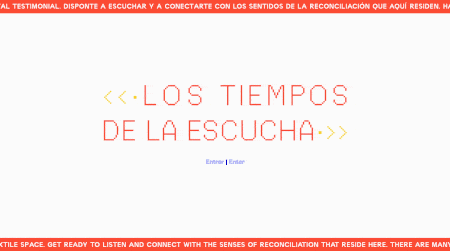
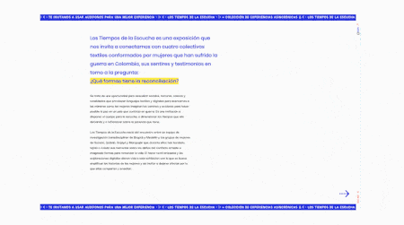

Time(s) to Listen was an exhibition that invited visitors to connect with four textile collectives of women victims of the Colombian armed conflict.
As part of Mending the New, a research project studying the ways in which textile crafts shape peace, textiles made by the collectives were intervened with electronics to create interactive experiences that allowed visitors to listen to the women's testimonies.
Visit the (online) exhibition → www.artesanaltecnologica.org/tiempos/
Role: Design Research, Web development, Interaction Design,
Technologies: WordPress, HTML, CSS, JavaScript, Arduino



